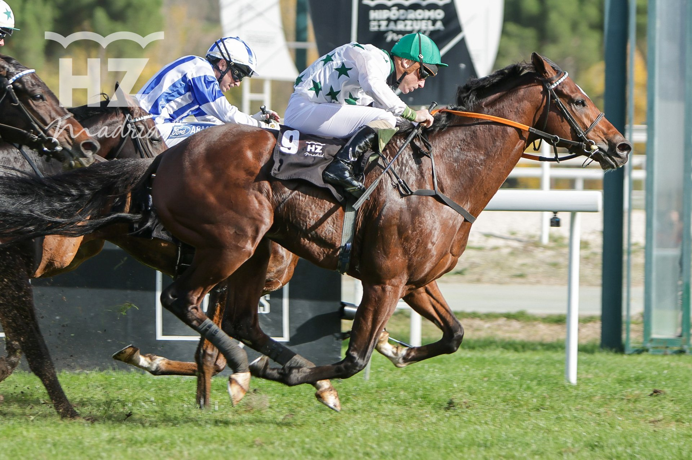

Majestad y Rojiblanco vuelven a verse las caras en el Gran Premio Román Martín
Los dos primeros del Memorial Duque de Toledo se reencuentran el 8 de noviembre en La Zarzuela, ante otros once rivales, sobre 2.000 metros y con Tetuán, vencedor de 2025, en el cajón.

El duelo ya tiene argumento. En el Memorial Duque de Toledo, Majestad remontó en los metros finales a Rojiblanco, que parecía ganador a falta de 200 metros. Ahora los 2.000 metros del Gran Premio Román Martín (Categoría A), quinta carrera de la jornada, podrían favorecer a Rojiblanco, una distancia en la que ha ofrecido su mejor rendimiento.
Son 13 los inscritos, caballos y yeguas de tres años en adelante. Imagine llega de imponerse en su anterior compromiso sobre esta distancia y de una gran remontada en el Hispanidad, donde fue segundo. Lo montará Kieran Shoemark, ganador este año del Queen Anne Stakes (Grupo 1) en Royal Ascot y de la Gold Cup (Grupo 1) en Irlanda, en su primera visita a La Zarzuela. Centauri, quinto en la milla del Hispanidad, afronta un recorrido más acorde con sus características. Y Tetuán ganó la edición 2025.
La prueba homenajea a Román Martín, natural de Navalmorales (Toledo), jockey con más de 1.100 victorias, seis Grandes Premios de Madrid y diez títulos de Campeón de España. Se retiró como jockey en 1982 y lideró como preparador la estadística nacional en 1993, 1994 y 1996.
La jornada del domingo 8 de noviembre arranca a las 11:30 con seis carreras. En la tercera se corre la quinta etapa de la Copa Volvo para amazonas y gentlemen, sobre 2.000 metros, con trece ejemplares de cuatro años en adelante. Entre ellos, Ipintza, que ganó en mayo en esa misma distancia, y Placid’oo, entre los dos primeros en sus cuatro últimas carreras.
La segunda carrera, el Premio Infanta Beatriz (Categoría C), reúne a doce ejemplares sobre 1.600 metros. En la primera, el Premio Mauricio Delcher Poulies, nueve potros y potrancas de dos años sin victoria se miden en la misma distancia, con El Trabuco, Everlasting Love y La Shana, esta con Jaime Gelabert, entre los nombres señalados. Quedan otras pruebas, entre ellas una de velocidad sobre 1.100 metros en línea recta.
Fuera de la pista habrá paseos en poni con el Club Ponyturf, visitas guiadas Hipotour, el Museo Eduardo Torroja, aparcamiento gratuito y autobuses lanzadera gratis desde Paseo Moret (Moncloa).
Fichas: Centauri (Gb) (caballo) · El Trabuco (Fr) (caballo) · Everlasting Love (Ire) (caballo) · Imagine (caballo) · Ipintza (caballo) · La Shana (Fr) (caballo)
Por Martín Larrañeta